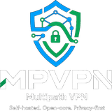

Several VPN tunnels at once.
Automatic failover. Leak-proof. Runs from RAM.Mehrere VPN-Tunnel gleichzeitig.
Automatischer Failover. Leak-sicher. Läuft im RAM.
¹ Post-quantum depends on the provider – see below.¹ Post-Quanten hängt vom Anbieter ab – siehe unten.
MPVPN is a self-hosted VPN gateway for your home or office network. It sends every connection through one of several VPN tunnels – from the same or different providers (Mullvad, NordVPN, IVPN, Surfshark, Proton, your own VPS …). If a tunnel fails, traffic moves on within seconds. Nothing leaves your network outside a tunnel.
MPVPN ist ein selbst betriebenes VPN-Gateway für dein Heim- oder Büronetz. Es schickt jede Verbindung durch einen von mehreren VPN-Tunneln – vom selben oder von verschiedenen Anbietern (Mullvad, NordVPN, IVPN, Surfshark, Proton, dein eigener VPS …). Fällt ein Tunnel aus, läuft der Verkehr in Sekunden weiter. Nichts verlässt dein Netz außerhalb eines Tunnels.
One static Go binary with userspace WireGuard and native OpenVPN, IPsec and AmneziaWG clients, on Alpine Linux – or as a stateless boot image entirely from RAM.
Ein statisches Go-Programm mit WireGuard im Userspace und eigenen Clients für OpenVPN, IPsec und AmneziaWG, auf Alpine Linux – oder als zustandsloses Boot-Image komplett im RAM.
Community is a complete, leak-proof multipath VPN for the shell. Pro turns it into an appliance you set up in minutes, that gets through blocks and leaves no traces.Community ist ein vollständiges, leak-sicheres Multipath-VPN für die Shell. Pro macht daraus eine Appliance, die in Minuten eingerichtet ist, durch Sperren kommt und keine Spuren hinterlässt.
OpenVPN, IPsec/IKEv2, AmneziaWG and SOCKS5 next to WireGuard – use almost any provider, mix them freely.OpenVPN, IPsec/IKEv2, AmneziaWG und SOCKS5 neben WireGuard – fast jeder Anbieter, frei kombinierbar.
Obfuscation as HTTPS, AmneziaWG against DPI and automatic transport fallback when WireGuard is blocked.Tarnung als HTTPS, AmneziaWG gegen DPI und automatischer Transport-Fallback, wenn WireGuard gesperrt ist.
Web interface with 2FA and live apply. Provider assistant: log in, pick country and servers – uplinks are created.Webinterface mit 2FA und Live-Übernahme. Anbieter-Assistent: anmelden, Land und Server wählen – die Uplinks entstehen.
RAM-disk appliance with LUKS key and verified boot. Duress passphrase, panic button and dead-man switch.RAM-Disk-Appliance mit LUKS-Stick und geprüftem Boot. Duress-Passwort, Panikknopf und Dead-Man-Switch.
VLANs with their own tunnels, DHCP and isolation; network page with every device and the tunnels it used.VLANs mit eigenen Tunneln, DHCP und Isolation; Netzwerkseite mit jedem Gerät und seinen Tunneln.
Rotation of tunnels and servers on a schedule with jitter; Mullvad multihop and SOCKS5 exits.Rotation von Tunneln und Servern nach Zeitplan mit Jitter; Mullvad-Multihop und SOCKS5-Ausgänge.
| Community | Pro | |
|---|---|---|
| WireGuard multipath, 6 strategies, rules, split DNSWireGuard-Multipath, 6 Strategien, Regeln, Split-DNS | ✓ | ✓ |
| Kill switch, DNS/IPv6 leak protection, leak self-testKill-Switch, DNS-/IPv6-Leak-Schutz, Leak-Selbsttest | ✓ | ✓ |
| Post-quantum WireGuard¹Post-Quanten-WireGuard¹ | ✓ | ✓ |
| Network fingerprint, config vault, shell configurationNetz-Fingerprint, Config-Vault, Shell-Konfiguration | ✓ | ✓ |
| Unlimited tunnelsUnbegrenzt viele Tunnel | ✓ | ✓ |
| Web interface with 2FA, live apply, signed updates, backupsWebinterface mit 2FA, Live-Übernahme, signierte Updates, Backups | – | ✓ |
| Provider assistant (NordVPN, PIA, Mullvad, IVPN, AzireVPN, Surfshark)Anbieter-Assistent (NordVPN, PIA, Mullvad, IVPN, AzireVPN, Surfshark) | – | ✓ |
| OpenVPN uplinks incl. post-quantum TLS¹OpenVPN-Uplinks inkl. Post-Quanten-TLS¹ | – | ✓ |
| IPsec/IKEv2 uplinks (e.g. AdGuard VPN)IPsec/IKEv2-Uplinks (z. B. AdGuard VPN) | – | ✓ |
| AmneziaWG uplinks (AWG 1.0/2.0/3)AmneziaWG-Uplinks (AWG 1.0/2.0/3) | – | ✓ |
| Transport fallback (Shadowsocks, SOCKS5, HTTPS) and SOCKS5 uplinksTransport-Fallback (Shadowsocks, SOCKS5, HTTPS) und SOCKS5-Uplinks | – | ✓ |
| Obfuscation as HTTPS + Mac clientTarnung als HTTPS + Mac-Client | – | ✓ |
| RAM-disk appliance + emergency functionsRAM-Disk-Appliance + Notfallfunktionen | – | ✓ |
| VLANs with own tunnels, DHCP, admin VLAN, isolationVLANs mit eigenen Tunneln, DHCP, Admin-VLAN, Isolation | – | ✓ |
| Network page (devices, VLAN editor)Netzwerkseite (Geräte, VLAN-Editor) | – | ✓ |
| Rotation, remote access via management WireGuardRotation, Fernzugriff über Management-WireGuard | – | ✓ |
¹ Post-quantum depends on the provider. The number of tunnels is never limited – not in Community, not in Pro.¹ Post-Quanten hängt vom Anbieter ab. Die Zahl der Tunnel ist nie begrenzt – weder in Community noch in Pro.
Programs and boot images are free to download from the releases – built reproducibly, boot-tested and signed (Ed25519). The VPN core runs without a license; Pro features need one.
Programme und Boot-Images gibt es kostenlos bei den Releases – reproduzierbar gebaut, boot-getestet und signiert (Ed25519). Der VPN-Kern läuft ohne Lizenz; Pro-Funktionen brauchen eine.
| mpvpn-x86_64.iso PRO | USB stick, CD, KVM/QEMU/Proxmox (BIOS + UEFI)USB-Stick, CD, KVM/QEMU/Proxmox (BIOS + UEFI) |
| mpvpn-x86_64.qcow2 PRO | KVM disk imageKVM-Plattenimage |
| vmlinuz / initramfs / ipxe PRO | PXE network bootPXE-Netzwerk-Boot |
| mpvpn-pro-linux-amd64 | normal installation (Alpine, Debian, Ubuntu, Alma/Rocky)normale Installation (Alpine, Debian, Ubuntu, Alma/Rocky) |
| mpvpn-obfs PRO | Mac/Linux client for obfuscationMac-/Linux-Client für die Tarnung |
| SHA256SUMS, signaturesSignaturen, SBOM | verify before usevor der Nutzung prüfen |
| Multi-path tunnelsMultipath-Tunnel | Any number of WireGuard, OpenVPN, IPsec/IKEv2, AmneziaWG and SOCKS5 uplinks at onceBeliebig viele WireGuard-, OpenVPN-, IPsec/IKEv2-, AmneziaWG- und SOCKS5-Uplinks gleichzeitig |
| 6 strategies6 Strategien | Sticky, WRR, least connections, lowest RTT, failover, bandwidth-awareSticky, WRR, wenigste Verbindungen, niedrigste RTT, Failover, bandbreitenbewusst |
| Health checksHealth-Checks | RTT probes and handshake checks; dead tunnels drop out in seconds and come back automaticallyRTT-Proben und Handshake-Prüfung; tote Tunnel fallen in Sekunden raus und kommen automatisch zurück |
| RulesRegeln | Domain wildcards, IP/CIDR, port, protocol, client/networkDomain-Wildcards, IP/CIDR, Port, Protokoll, Client/Netz |
| Split DNSSplit-DNS | Templates, DNS cache with IP→name mapping, auto-refreshed listsVorlagen, DNS-Cache mit IP→Name-Zuordnung, automatisch aktualisierte Listen |
| ImportImport | .conf (WireGuard, AmneziaWG) and .ovpn (OpenVPN) from your provider.conf (WireGuard, AmneziaWG) und .ovpn (OpenVPN) vom Anbieter |
| Provider assistantAnbieter-Assistent PRO | Log in at NordVPN, PIA, Mullvad, IVPN, AzireVPN or Surfshark, pick country, city, protocol and servers – uplinks are created, keys renewed automatically; guided import for Proton, Windscribe, ExpressVPN, PureVPNBei NordVPN, PIA, Mullvad, IVPN, AzireVPN oder Surfshark anmelden, Land, Stadt, Protokoll und Server wählen – die Uplinks entstehen, Schlüssel werden automatisch erneuert; geführter Import für Proton, Windscribe, ExpressVPN, PureVPN |
| Mullvad extrasMullvad-Extras PRO | Multihop over Mullvad's entry relays and SOCKS5 exits through the tunnel – exit elsewhere without a second keyMultihop über Mullvads Eingangs-Server und SOCKS5-Ausgänge durch den Tunnel – woanders raus ohne zweiten Schlüssel |
| IPsec/IKEv2IPsec/IKEv2 PRO | Router logins of providers without WireGuard export (e.g. AdGuard VPN) – IKEv2 and ESP run inside MPVPN, no strongSwanRouter-Zugänge von Anbietern ohne WireGuard-Export (z. B. AdGuard VPN) – IKEv2 und ESP laufen in MPVPN, ohne strongSwan |
| VLANsVLANs PRO | 802.1Q VLANs with their own tunnels each (e.g. VLAN 10 → NordVPN, VLAN 20 → Mullvad), DNS through the same tunnels, own DHCP, admin-only VLANs, isolation802.1Q-VLANs mit jeweils eigenen Tunneln (z. B. VLAN 10 → NordVPN, VLAN 20 → Mullvad), DNS durch dieselben Tunnel, eigenes DHCP, Admin-VLANs, Isolation |
| Network pageNetzwerkseite PRO | Every device of the LAN and the VLANs as map and table – name, vendor, type, tunnels used; RAM onlyJedes Gerät im LAN und in den VLANs als Karte und Tabelle – Name, Hersteller, Typ, genutzte Tunnel; nur im RAM |
| Gateway modeGateway-Modus | Default gateway with its own DHCP server, or next to your routerStandard-Gateway mit eigenem DHCP-Server oder neben deinem Router |
| Kill switchKill-Switch | nftables: nothing leaves the LAN outside a tunnelnftables: nichts verlässt das LAN außerhalb eines Tunnels |
| DNS through the tunnelDNS durch den Tunnel | Port 53 captured, DoT/DoH to third parties blockedPort 53 abgefangen, DoT/DoH zu Dritten gesperrt |
| IPv6 offIPv6 aus | Kernel + sysctlKernel + sysctl |
| Leak self-testLeak-Selbsttest | WAN IP vs. exit IP of every tunnel, kill switch, tunnel DNSWAN-IP gegen Ausgangs-IP jedes Tunnels, Kill-Switch, Tunnel-DNS |
| ObfuscationTarnung PRO | WireGuard over TLS/WebSocket on 443 to your own relay – looks like HTTPSWireGuard über TLS/WebSocket auf 443 zu deinem eigenen Relay – sieht aus wie HTTPS |
| AmneziaWGAmneziaWG PRO | WireGuard disguised against DPI – junk packets, padding, own headers, imitation packets, AWG 3 header protectionWireGuard getarnt gegen DPI – Junk-Pakete, Padding, eigene Header, Imitationspakete, AWG-3-Header-Schutz |
| Transport fallbackTransport-Fallback PRO | Shadowsocks, SOCKS5 or HTTPS per uplink when plain WireGuard is blocked – switches automatically and probes backShadowsocks, SOCKS5 oder HTTPS pro Uplink, wenn normales WireGuard gesperrt ist – schaltet automatisch um und prüft zurück |
| Mac clientMac-Client PRO | mpvpn-obfs: the WireGuard app on a Mac, tunnelled as HTTPSmpvpn-obfs: die WireGuard-App auf dem Mac, als HTTPS getunnelt |
| WireGuard + ML-KEM-1024WireGuard + ML-KEM-1024 | Mullvad ephemeral peer, detected automatically – PQ depends on the providerMullvad Ephemeral Peer, automatisch erkannt – PQ hängt vom Anbieter ab |
| OpenVPN hybrid TLSOpenVPN hybrides TLS PRO | X25519MLKEM768 offered in every handshake – used only if the provider's server supports itX25519MLKEM768 bei jedem Handshake angeboten – genutzt nur, wenn der Server des Anbieters es kann |
| BackupsBackups PRO | age with post-quantum recipientsage mit Post-Quanten-Empfängern |
Post-quantum always depends on the provider: MPVPN offers it on every uplink, but it is only used where the provider's server supports it – otherwise the tunnel stays classically encrypted. WireGuard: today Mullvad (ML-KEM-1024, automatic). OpenVPN: hybrid TLS (X25519MLKEM768) needs a server with OpenVPN 2.7 / OpenSSL 3.5, e.g. your own server or Cryptostorm. Providers at a glance
Post-Quanten hängt immer vom Anbieter ab: MPVPN bietet es auf jedem Uplink an, genutzt wird es aber nur, wenn der Server des Anbieters es unterstützt – sonst bleibt der Tunnel klassisch verschlüsselt. WireGuard: derzeit Mullvad (ML-KEM-1024, automatisch). OpenVPN: hybrides TLS (X25519MLKEM768) braucht einen Server mit OpenVPN 2.7 / OpenSSL 3.5, z. B. einen eigenen Server oder Cryptostorm. Anbieter auf einen Blick
| RotationRotation PRO | Switch tunnels and servers from a pool, manual or scheduled with jitter, grouped by providerTunnel und Server aus einem Pool wechseln, manuell oder nach Zeitplan mit Jitter, nach Anbieter gruppiert |
| Network fingerprintNetz-Fingerprint | Random WAN MAC, neutral DHCP identity, uniform TTLZufällige WAN-MAC, neutrale DHCP-Identität, einheitliche TTL |
| No logsKeine Logs | Logs and audit only in RAM, memory locked, no core dumpsLogs und Audit nur im RAM, Speicher gesperrt, keine Core-Dumps |
| StatelessZustandslos PRO | Runs entirely from RAM, no swap, no disk writesLäuft komplett im RAM, kein Swap, keine Schreibzugriffe auf Platte |
| LUKS USB keyLUKS-USB-Stick PRO | Config on an encrypted stick, open only for secondsKonfiguration auf einem verschlüsselten Stick, nur Sekunden geöffnet |
| Network vaultNetz-Vault PRO | Or an encrypted vault on a web server / KVM diskOder ein verschlüsselter Vault auf einem Webserver / einer KVM-Platte |
| Verified bootGeprüfter Boot PRO | Signed hashes of kernel and initramfs checked before unlockingSignierte Hashes von Kernel und Initramfs werden vor dem Entsperren geprüft |
| Boot mediaBootmedien PRO | ISO, USB, qcow2, PXE/iPXE from one buildISO, USB, qcow2, PXE/iPXE aus einem Build |
| Panic buttonPanikknopf PRO | Dashboard, shell or knock: lock down or wipeDashboard, Shell oder Klopfen: sperren oder löschen |
| USB pullUSB ziehen PRO | Removing the key ends the sessionStick abziehen beendet die Sitzung |
| Duress passphraseDuress-Passwort PRO | Wipes instead of unlockingLöscht statt zu entsperren |
| Dead-man switchDead-Man-Switch PRO | Wipe when you stop checking inLöscht, wenn du dich nicht mehr meldest |
| Paranoid modeParanoid-Modus PRO | Kept alive by knocks that look like failed IMAP/SMTP/DNS loginsAm Leben gehalten durch Klopfzeichen, die wie fehlgeschlagene IMAP/SMTP/DNS-Logins aussehen |
| Web interfaceWebinterface PRO | HTTPS :8443, German and EnglishHTTPS :8443, Deutsch und Englisch |
| 2FA2FA PRO | TOTP and WebAuthn/passkeysTOTP und WebAuthn/Passkeys |
| Live applyLive-Übernahme PRO | Immediate, with automatic rollbackSofort, mit automatischem Rollback |
| Remote accessFernzugriff PRO | Management WireGuard: admin UI/SSH from outside only through an own tunnel, QR per deviceManagement-WireGuard: Admin-UI/SSH von außen nur durch einen eigenen Tunnel, QR pro Gerät |
| ShellShell | Every setting via mpvpn-pro -get/-set or the config fileJede Einstellung über mpvpn-pro -get/-set oder die Konfigurationsdatei |
| Signed updatesSignierte Updates PRO | Notice in UI/CLI/login, optional auto-update with rollback watchdogHinweis in UI/CLI/Login, optional Auto-Update mit Rollback-Wächter |
| Supply chainLieferkette | Reproducible builds, pinned dependencies, govulncheck, SBOM, offline root keyReproduzierbare Builds, feste Abhängigkeiten, govulncheck, SBOM, Offline-Root-Schlüssel |
Which provider offers which protocols and post-quantum – and what MPVPN can use of it. Post-quantum inside a provider's own app does not help a router or gateway: it only counts if the provider makes it usable without the app.
Welcher Anbieter welche Protokolle und Post-Quanten bietet – und was MPVPN davon nutzen kann. Post-Quanten nur in der App des Anbieters hilft einem Router oder Gateway nicht: Es zählt nur, wenn der Anbieter es ohne App nutzbar macht.
| ProviderAnbieter | ProtocolsProtokolle | PQ at the providerPQ beim Anbieter | PQ in MPVPNPQ in MPVPN | In MPVPNIn MPVPN |
|---|---|---|---|---|
| Mullvad | WireGuard (OpenVPN switched off since 15 Jan 2026)WireGuard (OpenVPN seit 15.01.2026 abgeschaltet) | WireGuard: ML-KEM-1024 (+ HQC), usable without the appWireGuard: ML-KEM-1024 (+ HQC), ohne App nutzbar | yes, automaticja, automatisch | Assistant, multihop, SOCKS5 exitsAssistent, Multihop, SOCKS5-Ausgänge |
| NordVPN | WireGuard (NordLynx), OpenVPN, IKEv2WireGuard (NordLynx), OpenVPN, IKEv2 | NordLynx: Kyber768 inside the tunnel, usable without the app (opt-in in the apps)NordLynx: Kyber768 im Tunnel, ohne App nutzbar (in den Apps zuschaltbar) | planned (reachable inside the tunnel)geplant (im Tunnel erreichbar) | AssistantAssistent |
| Surfshark | WireGuard, OpenVPN, IKEv2WireGuard, OpenVPN, IKEv2 | WireGuard in the apps (default since Jan 2026)WireGuard in den Apps (Standard seit Jan. 2026) | no – app onlynein – nur App | Assistant / importAssistent / Import |
| ExpressVPN | Lightway, WireGuard, OpenVPN, IKEv2Lightway, WireGuard, OpenVPN, IKEv2 | Lightway (ML-KEM), WireGuard via app login serviceLightway (ML-KEM), WireGuard über App-Anmeldedienst | no – app onlynein – nur App | Guided import (OpenVPN)Geführter Import (OpenVPN) |
| Windscribe | WireGuard, OpenVPN, IKEv2, StealthWireGuard, OpenVPN, IKEv2, Stealth | WireGuard PSK via ML-KEM TLS, at app login (since Oct 2025)WireGuard-PSK über ML-KEM-TLS beim App-Login (seit Okt. 2025) | plannedgeplant | Guided importGeführter Import |
| IVPN | WireGuard, OpenVPNWireGuard, OpenVPN | Kyber-1024 (+ McEliece) at key upload via the account API – without the app, needs the account IDKyber-1024 (+ McEliece) beim Schlüssel-Upload über die Konto-API – ohne App, braucht die Konto-ID | planned (optional)geplant (optional) | AssistantAssistent |
| Cryptostorm | OpenVPN, WireGuardOpenVPN, WireGuard | OpenVPN: X25519MLKEM768 (OpenVPN 2.7 / OpenSSL 3.5)OpenVPN: X25519MLKEM768 (OpenVPN 2.7 / OpenSSL 3.5) | expected – MPVPN offers it, not yet tested livevoraussichtlich – MPVPN bietet es an, noch nicht live getestet | Import (.ovpn)Import (.ovpn) |
| Proton VPN | WireGuard, OpenVPN, IKEv2, Stealth (app)WireGuard, OpenVPN, IKEv2, Stealth (App) | not yet – groundwork announcednoch nicht – Grundlage angekündigt | nonein | Guided importGeführter Import |
| Private Internet Access | WireGuard, OpenVPNWireGuard, OpenVPN | not yetnoch nicht | nonein | Assistant, keys renewed automaticallyAssistent, Schlüssel automatisch erneuert |
| PureVPN | WireGuard, OpenVPN, IKEv2WireGuard, OpenVPN, IKEv2 | only 'quantum-resistant' OpenVPN keys in 6 countries – no PQ key exchangenur „quantenresistente“ OpenVPN-Schlüssel in 6 Ländern – kein PQ-Schlüsseltausch | nonein | Guided importGeführter Import |
| AzireVPN | WireGuardWireGuard | none knownnicht bekannt | nonein | AssistantAssistent |
| AdGuard VPN | AdGuard protocol (app), IKEv2 for routersAdGuard-Protokoll (App), IKEv2 für Router | none knownnicht bekannt | nonein | IPsec/IKEv2 uplinkIPsec/IKEv2-Uplink |
| Own server / VPSEigener Server / VPS | WireGuard, OpenVPN, AmneziaWGWireGuard, OpenVPN, AmneziaWG | OpenVPN 2.7 hybrid TLS; WireGuard PSK service plannedOpenVPN 2.7 hybrides TLS; WireGuard-PSK-Dienst geplant | OpenVPN: yes (tested live) · WireGuard: plannedOpenVPN: ja (live getestet) · WireGuard: geplant | Import, own configsImport, eigene Configs |
yes only in the provider's app planned / expected no
ja nur in der App des Anbieters geplant / voraussichtlich nein
As of 16 Nov 2026, based on the providers' own statements; providers change this often.
Stand 16.11.2026, nach Angaben der Anbieter; Anbieter ändern das oft.
VPN core, unlimited tunnels
VPN-Kern, unbegrenzt viele Tunnel
Pricing announced at launch
Preise zum Start
The number of tunnels is never limited. A license is bound to one device and can be moved.
Die Zahl der Tunnel ist nie begrenzt. Eine Lizenz gilt für ein Gerät und lässt sich umziehen.
Privacy-respecting licensing: the periodic check sends only a machine ID and the program's own checksum – never your traffic, DNS or browsing. Every release is reproducible and signed, so the checksum can be verified against the public release.Datensparsame Lizenzierung: Die regelmäßige Prüfung sendet nur eine Geräte-ID und die Prüfsumme des Programms – nie deinen Verkehr, DNS oder Verlauf. Jedes Release ist reproduzierbar und signiert, die Prüfsumme lässt sich also gegen das öffentliche Release prüfen.
Kill switch (nftables): nothing leaves outside a tunnel. ¹ Post-quantum depends on the provider.Kill-Switch (nftables): nichts verlässt das Netz außerhalb eines Tunnels. ¹ Post-Quanten hängt vom Anbieter ab.
Uplink side: AmneziaWG against DPI, transport fallback Shadowsocks → SOCKS5 → HTTPS when WireGuard is blocked – switches automatically and returns.Uplink-Seite: AmneziaWG gegen DPI, Transport-Fallback Shadowsocks → SOCKS5 → HTTPS, wenn WireGuard gesperrt ist – schaltet automatisch um und zurück.
Post-quantum always depends on the provider: MPVPN offers it on every uplink, but it is only used where the provider's server supports it – otherwise the tunnel stays classically encrypted. WireGuard: today Mullvad (ML-KEM-1024, automatic). OpenVPN: hybrid TLS (X25519MLKEM768) needs a server with OpenVPN 2.7 / OpenSSL 3.5, e.g. your own server or Cryptostorm. Providers at a glance
Post-Quanten hängt immer vom Anbieter ab: MPVPN bietet es auf jedem Uplink an, genutzt wird es aber nur, wenn der Server des Anbieters es unterstützt – sonst bleibt der Tunnel klassisch verschlüsselt. WireGuard: derzeit Mullvad (ML-KEM-1024, automatisch). OpenVPN: hybrides TLS (X25519MLKEM768) braucht einen Server mit OpenVPN 2.7 / OpenSSL 3.5, z. B. einen eigenen Server oder Cryptostorm. Anbieter auf einen Blick
| Alpine Linux | reference platform (OpenRC)Referenzplattform (OpenRC) |
| RAM-disk imageRAM-Disk-Image PRO | Alpine-based, x86_64Alpine-basiert, x86_64 |
| Debian 13, Ubuntu 24.04, Alma/Rocky 10 | tested, mpvpn-hostcheck adjusts the hostgetestet, mpvpn-hostcheck passt den Host an |
| RequirementsVoraussetzungen | /dev/net/tun, nftables, iproute2 – 1 vCPU, 512 MB RAM/dev/net/tun, nftables, iproute2 – 1 vCPU, 512 MB RAM |
Censorship-resistant transports (Hysteria2, VLESS + Reality, Shadowsocks-2022, CDN fronting), post-quantum for more providers (NordVPN, IVPN, Windscribe), a post-quantum PSK service on your own VPS.
Zensurfeste Transporte (Hysteria2, VLESS + Reality, Shadowsocks-2022, CDN-Fronting), Post-Quanten für weitere Anbieter (NordVPN, IVPN, Windscribe), ein Post-Quanten-PSK-Dienst auf deinem eigenen VPS.